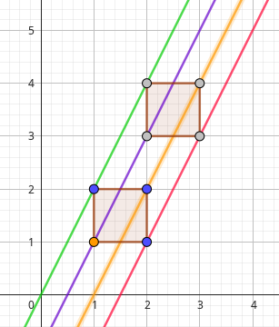
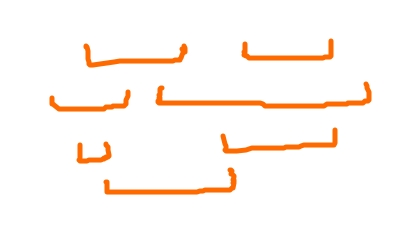
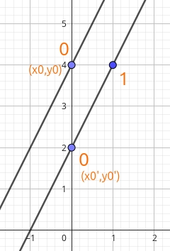
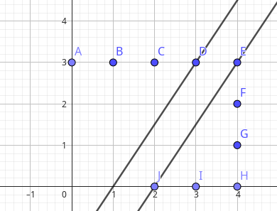
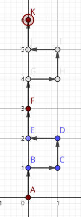

link 本题为原T3（致敬传奇gjoj T3 放黑 ）
题意
小 L 在二维平面从 ( 0 , 0 ) (0,0) ( 0 , 0 ) n n n s s s E,N,W,S 表示方向），每天起点是前一天终点。旅行 k k k
定义：
好的点 ：至少被经过一次的点。
完美的点 ：( x , y ) (x,y) ( x , y ) ( x , y ) , ( x , y + 1 ) , ( x + 1 , y ) , ( x + 1 , y + 1 ) (x,y), (x,y+1), (x+1,y), (x+1,y+1) ( x , y ) , ( x , y + 1 ) , ( x + 1 , y ) , ( x + 1 , y + 1 )
求完美点的数量。
1 ≤ N ≤ 10 5 , 1 ≤ K ≤ 10 9 1\leq N\leq 10^5,1\leq K\leq 10^9 1 ≤ N ≤ 1 0 5 , 1 ≤ K ≤ 1 0 9
做法
使用了这篇 题解的做法（gjoj 上给的还是太抽象了）。
首先我们要记录的肯定有每一轮对于前一轮的偏移量 ( d x , d y ) (dx,dy) ( d x , d y ) ( x , y ) (x,y) ( x , y )
考虑我们完整的模拟一遍。
然后我们考虑在 k k k ( d x , d y ) (dx,dy) ( d x , d y )
给每一个集合一个索引，先不考虑这个索引是什么。
然后我们针对某个点 p p p
以这四个点，通过某种神秘方法找到他们的集合，令这四个集合（p p p S , U , R , U R S,U,R,UR S , U , R , U R ( i , j ) (i,j) ( i , j ) ( i + j ) ∈ S (i+j)\in S ( i + j ) ∈ S ( i + 1 , j ) ∈ R (i+1,j)\in R ( i + 1 , j ) ∈ R ( i , j + 1 ) ∈ U (i,j+1)\in U ( i , j + 1 ) ∈ U ( i + 1 , j + 1 ) ∈ U R (i+1,j+1)\in UR ( i + 1 , j + 1 ) ∈ U R
事实上这种做法中，集合就像是直线 k x + b kx+b k x + b
比如说以下这个例子：

考虑标橙的点为 p p p p p p
查看四个集合内是否有符合要求的点位：可以看到 ( 1 , 1 ) (1,1) ( 1 , 1 ) ( 2 , 3 ) (2,3) ( 2 , 3 )
可以发现，这样的做法中存在几个问题：
单个集合存储 k k k
索引怎么算
怎么能快速统计符合要求的点位
首先我们考虑怎么样能使点位开销变小。
对于第一轮出现的点 ( x i , y i ) (x_i,y_i) ( x i , y i ) k k k ( x i + k ⋅ d x , y i + k ⋅ d y ) (x_i+k\cdot dx,y_i+k\cdot dy) ( x i + k ⋅ d x , y i + k ⋅ d y )
可以发现，这 k k k
那么我们就考虑不直接维护一个集合内究竟有什么点，而是维护这些点相较于 ( x 0 , y 0 ) (x_0,y_0) ( x 0 , y 0 ) ，方便说是 。
假设 x i = x 0 + l ⋅ d x , y i = y 0 + l ⋅ d y x_i=x_0+l\cdot dx,\;y_i=y_0+l\cdot dy x i = x 0 + l ⋅ d x , y i = y 0 + l ⋅ d y k k k [ l , l + k − 1 ] [l,l+k-1] [ l , l + k − 1 ]
那么就可以使用连续区间来表示集合了。很显然发现这样操作对于集合而言是不漏的。
考虑重复的问题。
假如在第一轮中出现了 1 1 1 3 3 3 k = 3 k=3 k = 3 [ 1 , 3 ] [1,3] [ 1 , 3 ] [ 3 , 5 ] [3,5] [ 3 , 5 ]
这是有重复的。不过我们可以从左到右合并区间即可。
然后我们来同时考虑第二和第三点。
在第一点中，我们使用了若干区间来表示一个集合。这导致四个集合看起来就像是这个东西：

因为集合已经没有具体的坐标了，这就是说，这四个集合的 ( x 0 , y 0 ) (x_0,y_0) ( x 0 , y 0 )
然后直接扫一遍求交集就好了，来挑战这道题的人想必都会 。
对于 ( x 0 , y 0 ) (x_0,y_0) ( x 0 , y 0 )
那索引呢？要想从“点”容易的访问到集合，考虑到还得维护每个集合的 ( x 0 , y 0 ) (x_0,y_0) ( x 0 , y 0 ) 索引是 ( x 0 , y 0 ) (x_0,y_0) ( x 0 , y 0 )
有一个能从“点”到索引的关系：考虑点 ( i , j ) (i,j) ( i , j ) s = min ( ⌊ i d x ⌋ , ⌊ j d y ⌋ ) s=\min(\lfloor \frac{i}{dx}\rfloor,\lfloor \frac{j}{dy}\rfloor ) s = min (⌊ d x i ⌋ , ⌊ d y j ⌋) x 0 = i − s ⋅ d x , y 0 = j − s ⋅ d y x_0=i-s\cdot dx,\;y_0=j-s\cdot dy x 0 = i − s ⋅ d x , y 0 = j − s ⋅ d y 不考虑负数 ）
那这样子的索引是有部分 连续性的。因此可以比较方便的访问其他集合 ：
显然，一个集合内，具体是什么点访问到这个集合是不重要的，因此直接考虑使用索引。
以 ( x 0 , y 0 ) (x_0,y_0) ( x 0 , y 0 ) S S S
以 ( x 0 + 1 , y 0 ) (x_0+1,y_0) ( x 0 + 1 , y 0 ) R R R s ′ = min ( ⌊ x 0 + 1 d x ⌋ , ⌊ y 0 d y ⌋ ) ≠ 0 s'=\min(\lfloor \frac{x_0+1}{dx}\rfloor,\lfloor \frac{y_0}{dy}\rfloor)\neq 0 s ′ = min (⌊ d x x 0 + 1 ⌋ , ⌊ d y y 0 ⌋) = 0 R R R ( x 0 ′ , y 0 ′ ) (x_0',y_0') ( x 0 ′ , y 0 ′ )
这就需要对 R R R

其他两个同理。
可能有人会想，为什么要这么麻烦，直接使用这个集合最小的点不就好了？
显然这样是不对的。我要使用 D 就不对了。

然后显然对整幅图做 左右/上下翻转 和 平移 就可以规避负数的问题。
那么这道题逻辑层面的做法就是这样。
细节
下面主要讲一下实现上的细节：
对 d x = d y = 0 dx=dy=0 d x = d y = 0
对 dx=0 \or dy=0 也需要做一个特判。由于求 s s s
考虑这种情况长什么样（以 d x = 0 dx=0 d x = 0

d x = 0 dx=0 d x = 0 x x x x 0 = x , y 0 = y m o d d y x_0=x,y_0=y \bmod dy x 0 = x , y 0 = y mod d y d y = 0 dy=0 d y = 0
对集合进行偏移时，可能会出现集合内区间 l l l r r r 0 0 0 l < 0 , r ≥ 0 l<0,r\geq 0 l < 0 , r ≥ 0 l ← 0 l\leftarrow 0 l ← 0 l , r < 0 l,r<0 l , r < 0
记得把出发点处理！
代码
1 2 3 4 5 6 7 8 9 10 11 12 13 14 15 16 17 18 19 20 21 22 23 24 25 26 27 28 29 30 31 32 33 34 35 36 37 38 39 40 41 42 43 44 45 46 47 48 49 50 51 52 53 54 55 56 57 58 59 60 61 62 63 64 65 66 67 68 69 70 71 72 73 74 75 76 77 78 79 80 81 82 83 84 85 86 87 88 89 90 91 92 93 94 95 96 97 98 99 100 101 102 103 104 105 106 107 108 109 110 111 112 113 114 115 116 117 118 119 120 121 122 123 124 125 126 127 128 129 130 131 132 133 134 135 136 137 138 139 140 141 142 143 144 145 146 147 148 149 150 151 152 153 154 155 156 157 158 159 160 161 162 163 164 165 166 167 168 169 170 171 172 173 174 175 176 177 178 179 180 181 182 183 184 185 186 187 188 189 190 191 192 193 194 195 196 197 198 199 200 201 202 203 204 205 206 207 208 209 210 211 212 213 214 215 216 217 218 219 220 221 222 223 224 225 226 227 228 229 230 231 232 233 234 235 236 237 238 239 240 241 242 243 244 245 246 247 248 249 250 251 252 253 254 255 256 257 258 259 260 261 262 263 264 265 266 267 268 269 270 271 272 273 274 275 276 277 278 279 280 281 282 283 284 285 286 287 #include <bits/stdc++.h> using namespace std;typedef long long ll;typedef pair<ll,ll> PII;const int maxn=1e5 +35 ;const ll inf=1e18 ;int f[150 ][2 ];void initf () 'E' ][0 ]=1 ;f['E' ][1 ]=0 ;'N' ][0 ]=0 ;f['N' ][1 ]=1 ;'W' ][0 ]=-1 ;f['W' ][1 ]=0 ;'S' ][0 ]=0 ;f['S' ][1 ]=-1 ;inline PII operator * (int k,PII x){return {x.first*k,x.second*k};inline void operator -= (PII &x,PII y){int n,k;char s[maxn];void input () read ();k=read ();read (s+1 );int dx,dy;void calc_delta () int x=0 ,y=0 ;for (int i=1 ;i<=n;++i){char way=s[i];0 ];1 ];if (x<0 ){for (int i=1 ;i<=n;++i){if (s[i]=='E' ) s[i]='W' ;else if (s[i]=='W' ) s[i]='E' ;if (y<0 ){for (int i=1 ;i<=n;++i){if (s[i]=='N' ) s[i]='S' ;else if (s[i]=='S' ) s[i]='N' ;int xshift,yshift;void calc_nagative_shift () int x=0 ,y=0 ;for (int i=1 ;i<=n;++i){char way=s[i];0 ];1 ];if (x<0 ) xshift=max (xshift,-x);if (y<0 ) yshift=max (yshift,-y);void go1 () int x=xshift,y=yshift;min (x/dx,y/dy);emplace_back (g);for (int i=1 ;i<=n;++i){char way=s[i];0 ];1 ];min (x/dx,y/dy);emplace_back (g);struct Seg {Seg (){}Seg (ll l,ll r):l (l),r (r){}void to_seg () for (auto it=line.begin ();it!=line.end ();++it){sort (it->second.begin (),it->second.end ());auto end=unique (it->second.begin (),it->second.end ());erase (end,it->second.end ());for (auto p: line[sp]){if (p==r+1 ) r=p;else {if (r!=-inf) lineseg[sp].push_back (Seg (l,r));push_back (Seg (l,r));bool del[maxn];void gok () for (auto it=lineseg.begin ();it!=lineseg.end ();++it){auto segv=&(it->second);for (auto seg: *segv){push_back ({seg.l,seg.r+k-1 });memset (del,0 ,sizeof (bool )*(segtok.size ()+5 ));for (int i=0 ;i<segtok.size ()-1 ;++i){if (segtok[i].r>=segtok[i+1 ].l-1 ){1 ;+1 ]=Seg (segtok[i].l,segtok[i+1 ].r);clear ();for (int i=0 ;i<segtok.size ();++i){if (!del[i]){push_back (segtok[i]);clear ();#define UR 3 #define R 1 #define U 2 4 ];4 ];void calc_4dot () 0 ].first,sy=sp[0 ].second;1 ]=sh[2 ]=sh[3 ]=inf;+1 ,sy}; if (dx) sh[R]=(sx+1 )/dx; if (dy) sh[R]=min (sh[R],sy/dy);+1 }; if (dx) sh[U]=sx/dx; if (dy) sh[U]=min (sh[U],(sy+1 )/dy);+1 ,sy+1 }; if (dx) sh[UR]=(sx+1 )/dx; if (dy) sh[UR]=min (sh[UR],(sy+1 )/dy);PII ({dx,dy}); sp[U]-=sh[U]*PII ({dx,dy}); sp[UR]-=sh[UR]*PII ({dx,dy});4 ];void edit_segv () for (int i=0 ;i<4 ;++i){clear ();if (!lineseg.count (stp)) continue ;for (auto seg: lineseg[stp]){if (r<0 ) continue ; max (l,0ll );push_back ({l,r});void add_ans () int i[4 ]={0 ,0 ,0 ,0 };while (1 ){for (int j=0 ;j<4 ;++j){if (i[j]>=segv[j].size ()) return ;for (int j=0 ;j<4 ;++j){max (mxst,segv[j][i[j]].l);min (mnen,segv[j][i[j]].r);if (mnen<mxst){for (int j=0 ;j<4 ;++j){while (i[j]<segv[j].size ()&&segv[j][i[j]].r<mxst) ++i[j];else {+1 ;for (int j=0 ;j<4 ;++j){if (segv[j][i[j]].r==mnen) ++i[j];void solve () for (auto it=lineseg.begin ();it!=lineseg.end ();++it){0 ]={sx,sy}; sh[0 ]=0 ;calc_4dot ();edit_segv ();add_ans ();namespace Delta0{void solve () int x=0 ,y=0 ;for (int i=1 ;i<=n;++i){char way=s[i];0 ];1 ];insert ({x,y});for (auto p: vis){+1 ,p.second},u={p.first,p.second+1 },ur={p.first+1 ,p.second+1 };if (vis.count (r)&&vis.count (u)&&vis.count (ur)) ++ans;namespace Delta1{void go1 () int x=xshift,y=yshift;if (dx==0 ) line[{x,y%dy}].push_back (y/dy);if (dy==0 ) line[{x%dx,y}].push_back (x/dx);for (int i=1 ;i<=n;++i){char way=s[i];0 ];1 ];if (dx==0 ) line[{x,y%dy}].push_back (y/dy);if (dy==0 ) line[{x%dx,y}].push_back (x/dx);int main () initf ();input ();calc_delta ();if (dx==0 &&dy==0 ){solve ();else if (dx==0 ||dy==0 ){calc_nagative_shift ();go1 ();to_seg ();gok ();solve ();else {calc_nagative_shift ();go1 ();to_seg ();gok ();solve ();printf ("%lld" ,ans);return 0 ;
复杂度分析
首先计算 d x , d y dx,dy d x , d y O ( n ) O(n) O ( n )
由于每个点都只属于一个集合内，因此 go1 的复杂度也是 O ( n ) O(n) O ( n ) log \log log
每一个点对应了一个区间，将每一个区间延伸至 k k k gok O ( n ) O(n) O ( n )
重点是计算答案时：
显然一个集合只能被他自己、他左边、他下面、他左下四个索引点访问到。因此如果有集合需要偏移，总 复杂度为 O ( 4 n ) O(4n) O ( 4 n )
然后计算交集是直接把 4 个集合的所有区间给便利，同样是 O ( 4 n ) O(4n) O ( 4 n )
其实我可以用 unordered_map<PII,vector<Seg> > lineseg 的但是可能是 pair 没有哈希也有可能是我把这事忘了 导致白白送出一个 log \log log
总复杂度 O ( n log 2 n ) O(n\log^2 n) O ( n log 2 n )